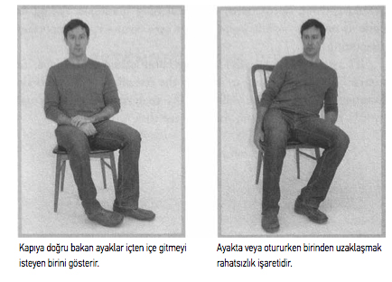

DÖRT-BEDENİ OKUMAK
Sağırlık beni hem dilin muktedir olduğu ikiyüzlülüğün hem de bedenin gizleyemediği birçok ifadenin şiddetle farkında olmaya terk etti.
-ŞAİR/OYUNCU TERRY GALLOWAY
Bölüm 1’deki risk sermayedarı Steve Marks’ı hatırlıyor musunuz? Yatırım yapma umuduyla San Francisco’daki bilgisayar animasyonu şirketine ziyarette bulunan kişi kendisi. Şirket içinde yaptığı gezintiden ve genel müdürle yaptığı konuşmadan etkilenen Marks giderken kabininde yazı yazan genç bir kadınla konuşmak için duruncaya kadar bir şeylerin ters gittiğinden şüphelenmemişti. Gördüğü ve duyduğu şey yüzleşmek için genel müdürün odasına geri dönmesine sebep oldu.
Genel müdür çözüldü ve itiraf etti: O kadın ve kabinlerinde oturan diğer insanların çoğu, aslında şirket iflasın eşiğinde olduğu için genel müdürün asıl çalışanlarının çoğunu gönderdiği gerçeğini gizlemek üzere kiralanmış oyunculardı.
İşaret neydi? Çalışanın göründüğü gibi olmadığını Marks nasıl anladı?
İpucu o genç kadının söylediklerinde değildi. Doğru, Marks kadının selamına verdiği ilk karşılığın birkaç dakika evvel bilgisayar başında tamamen işine dalmış görünen biri için biraz sönük ve garip bir şekilde şevksiz olduğunu düşünmüştü. Bununla birlikte akla uygun bir cevap vermişti ve kabinin etrafında dolaşan bir yabancı tarafından gafil avlanan biri ihtiyatlı cevap verebilirdi.
Marks’ı uyaran kadının davranışıydı. Konuştukları birkaç dakika içinde Marks onun kendisini kandırmaya çalışıyor olabileceğini anlatan üç işaret yakaladı.
Birincisi, onun ellerini fark etti. Kadın masasından başını kaldırıp bakarken ellerini klavyeden çekmişti ve masanın üzerine koymuştu. Marks, işine yoğunlaşmış birinin kendisiyle konuşurken ellerini klavyenin üzerinde tutmasını ve hatta belki onun dikkatini yaptığı şeyden uzaklaştırdığında biraz rahatsız olmuş veya şaşkın bakmasını beklerdi.
YALAN YAKALAMA TAVSİYESİ
Aldatmayı işaret edebilecek davranış kümelerine bakın. Tek bir hareket veya dil sürçmesi hiçbir şey anlam ifade etmeyebilir ama bir küme halindeki birkaç aldatma belirtisini gözlemlemek sizi teyakkuza geçirmeli.
Marks ayrıca kendisiyle konuşurken kadının sandalyesinde arkaya yaslanmasına, bedenini kabin girişine doğru eğmesine ve donakalmasına da şaşırmıştı. Endişe vermeyen bir soru sorulduğunda çoğu insan hafif masasının üzerine doğru eğilir veya belki koltuğunun kolçağına yaslanırdı. Bu kadının beden dili Marks’a kadının o anda bulunduğu yer dışında herhangi bir yerde olabilmeyi dilediğini anlatıyordu.
Üçüncü ipucu mu? Kadın konuşurken çantasını kabin girişinden uzaklaştırmıştı? Neden? Masasından kalkmak için hazırlık yapmıyordu ve Marks da kesinlikle onun çantasına doğru bir harekette bulunmamıştı. Marks, sinirli oldukları zaman insanların bazen ellerine geçirebildikleri herhangi bir şeyden -el çantaları, sırt çantaları, hatta sandalye veya masalar- “engel nesneleri” yarattıklarını biliyordu. Bu nesneleri algılanan tehlikeyle aralarına yerleştirirler. Bu yüzden faillerinin suçundan emin olan profesyonel sorgucular genellikle sorguladıkları kişiyle aralarında boş yerden başka bir şey bulunmamasına dikkat ederler. Yanıltmaya çalışan bir fail gerçeğin ortaya çıktığını hissettiğinde, iddia etmeyi planlayabileceği uydurmasyona odaklanmakta sorun yaşar. Bazen sorgucu sırf her döndüğünde sandalyesini şüphelinin biraz daha yakınına çekebilmek için odayı birkaç dakikalığına terk eder. Bu da failin kişisel alan duygusunu ihlal eder. Nedenini anlayamamakla birlikte giderek daha şeffaf hissetmeye başlar. Çoğunlukla giderek artan fiziksel yakınlık failin gerilimini o kadar artırır ki, sorgucunun hakikati zaten bildiğine karar verir ve kendisi de suçunu itiraf edebilir.112
112 Fred E. Inbau, John E. Reid, Joseph P. Buckley ve Brian C. Jayne, Essentials of the Reid Technique, Criminal Interrogation and Confessions, (Sudbury, İngiltere: Jones and Bartlett Publishers, 2005), 25-35, 123.
Marks, işlerini sahte görünümlerle tanıtan şirketlere yatırım yaptığı zaman Internet balonu sırasında çok para kaybetmişti. Kendisini ona çok fazla paraya mal olan abartıya ve kuyruklu yalanlara karşı donatmak için, aldatma tespiti konusunda eğitim aldı. Bu yüzden sözsüz insan iletişiminin yüzde 65’inin beden diliyle aktarıldığını biliyordu.113Gözüne çarpan ve bir şeyin ters olduğuna dikkatini çeken kadının beden diliydi -özellikle de duruşu. Masasına yaklaşırken kesinlikle onun söyleyeceği şeyle ilgiliydi, ama onun beden dilinin de kendisine bilmek istediğinden çok daha fazlasını anlatacağını biliyordu.
113 Stan B. Walters, Principles of Kinesic Interview and Interrogation (New York: CRC Pres,1996).
BURUN BİLİR
Eğer iletişimin yüzde 80’i sözsüzse ve o davranışın yüzde 65’i beden diliyse, sözsüz iletişim araçlarımızın geriye kalan yüzde 15’ini neler oluşturuyor? Beden kokusu, feromonlar ve diğer hormonal ve kimyasal işaretler.114
114 Maurice Schweitzer, R. Croson’la birlikte, “Curtailing Deception: The Impact of Direct Questions on Lies and Omissions,” International Journal of ConflictManagement 10, sayı 3 (1999): 225-248, Schweitzer’a göre, “Deception in Negotiations,” Wharton onMaking Decisions’da, editörler Stephen J. Hoch ve Howard C. Kunreuther (Hoboken, N.J.: John Wiley & Sons, 2001), 199. İletişimin sözlü ve sözsüz biçimlerinin güncel analizine ilişkin bazı tartışmalar var ama sözsüz araçlarla ilgili bu tahmin genel ortak görüş aralığında yer alıyor.
İNSANIN EVRENSEL DİLİ
iletişim kurmada beden dilinin sembolik gücüne ilişkin bilgi yeni değil ve yüzyıllardır kötüye kullanılmakta. isa’dan önce dördüncü yüzyılda varlıklı Yunan vatandaşları dik durmayı ve uzun adımlarla ve rahat bir havada yürümeyi alışkanlık haline getirmişlerdi. Bu durum köle ve işçilerden farklı olarak yerine getirmeleri gereken görevlerinin olmadığını gösteriyordu. Eski Roma’da aynı sınıftan insanlar kendilerini kontrol edebildiklerini göstermek için küçük ve sakin hareketler yapmaya uğraşırlardı.115
115 http://www.answers.com/topic/body-language.
1644’te ingiliz doktor John Bulwer, hareketlerimizle iletilen anlamların araştırması olan Chirologia’yı (El Falı) yayımladı. El, “bütün dilleri konuşur,” dedi, “ve Aklın evrensel niteliği olarak genellikle bütün Uluslar tarafından, Dillerinin biçimsel farkları içinde bilinir ve anlaşılır. Ve insan açısından doğal tek konuşma olduğu için, gayet rahat öğretmeden dünyanın oturulabilir bütün bölgelerindeki insanların ilk görüşte en kolay anladığı Dil ve insan Doğasının Genel lisanı olarak adlandırılabilir.”116
116 John Bulwer, Chirologia: or the naturall language of the hand. Composed of the speaking motions, and discoursing gestures thereof. Whereunto is added Chironomia: or, the art of manuall rhetoricke. Consisting of the naturall expressions, digested by art in the hand, as the chiefest instrument of eloquence (Londra: Thomas Harper, 1644), 5.
Shakespeare’in de Troilus ve Cressida’da, Ulysses, “Onun gözünde, onun yanağında, onun dudağında lisan var, Hayır, onun ayağı konuşuyor; onun iffetsiz ruhu vücudunun her eklemine ve dürtüsüne dikkat ediyor” diye haykırdığında aynı konuya eğilmesi şaşırtıcı değil.
YALAN YAKALAMA TAVSİYESİ
Bir insanın başını söylediği şeyin aksi yönünde sallamasına dikkat edin. Başını sağa sola sallarken, “Teklifinizin harika olduğunu düşünüyorum” diyen bir müşteri içten içe şüpheler barındırıyor olabilir.
Gördüğümüz gibi Charles Darwin’in kitabı The Expression of the Emotions in Man and Animals geniş bir yüz ifadesi yelpazesini gözden geçirir. Çalışma aynı zamanda insan ve hayvan el, kol ve baş hareketlerini bir hayli ayrıntılı olarak ele alır. “Niyetlerimiz ve hareketlerimiz birbiriyle çok sıkı bağlantılıdır” yazar Darwin,bir nesneyi hevesle herhangi yönde hareket ettirmek istediğimizde, bedenlerimizi de aynı yönde hareket etmekten alıkoymamız oldukça zordur... Bir şeyi arzulayan bir insan ya da bir çocuk, eğer herhangi bir insana yüksek sesle çekip gitmesini söylerse, kabahatlinin yakında bir yerde durmamasına ve anlatılmak isteneni açıklamak için bir harekete hiç ihtiyaç olmamasına rağmen, genellikle kolunu onu itip uzaklaştırmak istiyormuş gibi hareket ettirir. Diğer taraftan birisinin bize yaklaşmasını çok arzu ettiğimizde, onu kendimize çekiyormuş gibi davranırız ve başka sayısız olayda da bu böyledir.117
117 Charles Darwin, The Expression of the Emotions in Man and Animals 3. baskı. (New York: Oxford University Pres, 1998), 32-33. (İlk olarak 1872’de yayımlanmış.)
Bugün, çoğu Amerikalının beden dilinin en açık sözsüz ipuçlarına aşina olduğunu söylemek büyük ihtimalle doğrudur. Huzursuzluk içinde sallanan bir bacak, kamburlaşmış omuzlar, masaya vuran sıkılı bir yumruk - bunlar o kadar aşikâr duygu işaretleridir ki, yoruma gerek bırakmazlar. Bununla birlikte genellikle bedenlerimizin çoğu zaman farkında olmadan sözlerimizle çelişebilen sayısız gizli ipucu açığa vurduğunun farkında değilizdir. Eğitimli bir yalan dedektifine bu bilinçdışı “sızan” hareketler birisiyle ilgili altın bir bilgi madeni sağlar.
NEDEN AYNASI İŞTİR KİŞİNİN LAFA BAKILMAZ
Yalan tespitinde sözsüz davranışın sözlü davranıştan daha güvenilir bir gösterge olmasının iki nedeni var.
Birincisi şu: Yalancılar sözlerini tekrarlama eğilimindedir, el kol hareketlerini değil. Çoğu insan beden dilinden veya yüz ifadesinden ziyade söylediklerinden sorumlu tutulacağını zannettiğinden, bir hikâyeyi nasıl anlatmak istediklerine çok fazla kafa yorarlar. Belki kendilerinden beklendiğini bildikleri tepkiyi nasıl ifade edeceklerini bile çalışacaklardır. Basına bir söylentiyi sızdıran birisi, doğru zaman geldiğinde tepkisine -”Gazetede birleşmeyle ilgili haber mi çıkmış? Kim konuşmuş?”- uygun şekilde şaşkın, sarsılmış veya öfkeli bir bakış eklemesi gerektiğini bilir. Fakat eğer konuşma devam ederse, şaşırabilir. Elleriyle ne yapması lazım? Oturmalı mı, ayakta mı durmalı? Büyük olasılıkla bunu düşünmemiştir ve muhtemelen doğru kelimeleri söylediğinden emin olmakla o kadar meşguldür ki, bacağının sinirli bir şekilde sallanmasına veya kıvrık ayak başparmağını yerde döndürdüğüne dikkat edecek durumda değildir.
Bazen yalan söylemek üzere olan biri bedeninin kendisine ihanet etmediğinden emin olmak için mümkün olduğunca az hareket etmeye çalışacaktır. Bu da bizi sözsüz davranışın çoğu zaman aldatmayı kelimelerden daha hızlı açığa çıkarmasının ikinci nedenine götürür: Hareketsizlik doğal değildir. Bedeni hareketsiz tutmak ve tuhaf görünmemek imkânsızdır. Yine de kural olarak yalancılar ortalama insandan çok daha az el kol hareketi kullanırlar.118 Çoğu insan konuşmasını vurgulamak için oraya buraya hareket eder - önemli bir şey söylerken öne eğilerek, heyecanlandığında ayaklarının burnunu kaldırarak. Kollarını sallayarak veya havada çizgiler çizerek konuşmak için ellerini kullanırlar. Fakat pek çok zaman yalancılar çok dikkatli yazılmış konuşmalarına o kadar çok zihinsel enerji odaklarlar ki, bedenlerine fazla bir şey kalmaz.
118 Ekman Telling Lies’da resimlerle gösterilen hareketleri ele alır (New York: W. W. Norton, 2001), 104-109. Ayrıca bakın D.B. Buller ve R.K. Aune, “Nonverbal Cues to Deception Among Intimates, Friends and Strangers,” Journal of Nonverbal Behaviour 11 (1987): 269-290; Vrij, Detecting Lies and Deceit (Chichester, İngiltere: John Wiley & Sons, 2000), 38. Ek olarak, Joe Navarro, “A Four-Domain Model for Detecting Deception: An Alternative Paradigm for Interviewing,” FBI Bulletin, Haziran 2003, alıntı Mark L. Knapp ve Judith A. Hall, Nonverbal Communication in Human Interaction, 3. baskı (Orlando, Florida: Harcourt Brace Jovanovich, 1997), 320.
Profesyonel sorgucular çoğu zaman bir şüphelinin bedeninin üst kısmını dondurduğu zaman yalan söylediğini fark ettiklerini söylerler. Adeta hareketsiz kalarak sorgucunun onu görmesini engelleyebileceğini düşünür.119 Beş yaş çocukları yalan söylerken bu daha az hareket etme eğilimini gösterirler.120
119 John Reid & Associates, görüşme ve sorgu eğitim kılavuzu. Ayrıca Vrij, Detecting Lies and Deceit, 32-41; Jeffrey Krivis ve Mariam Zadeh, “Hunting for Devaption in Mediation -Winning Cases by Understanding Body Language,” Mediate.com, Haziran 2006, http://www. mediate.com/articles/krivis17.cfm. Buller ve Aune, “Nonverbal Cues to Deception,” 269-290; Paul Ekman ve Wallace Friesen, “Detecting Deception from the Body or Face,” Journal of Personality and Social Psychology 29 (1974): 288-298; Henry D. O’Hair, Michael J. Cody ve Margaret L. McLaughlin, “Prepared Lies, Spontaneous Lies, Machiavellianism, and Nonverbal Communication,” Human Communication Research 7, sayı 4 (Yaz 1981): 325-39.
120 L.F. Lowenstein, PhD, “Recent Research into Deception and Lying Behaviour, Part I,” Güney İngiltere Psikoloji Hizmetleri, http://www.xproexperts.co.uk/newsletters/may08/ Lowenstein%20Article%201.pdf.
YALAN YAKALAMA TAVSİYESİ
Sezgilerinize güvenin. Eğer bir konuşma size tuhaf geliyorsa, konuştuğunuz insan hareketler kullanmayı veya üst bedenini hareket ettirmeyi kesmiş olabilir - bu, aldatmayı gösteren doğal olmayan bir davranıştır.
Kabininde oturan sahte çalışana yaklaştığında Steve Marks’ın şahit olduğu şey buydu. Genç kadın izlendiğini fark ettiği anda -ve hemen bir hikâye uydurması gerekeceğini-ellerini hareket ettirmeyi bıraktı ve üst bedenini dondurdu. Tepesinde bir şahinin uçtuğunu gören av, yerinde donar. Oyuncunun sezgileri ona aynı şeyi yapmasını söyledi.
SIZINTILARI BULMAK
Sorgucuların ve başka yalan dedektiflerinin birisinin beden dilini izlerken kesinlikle aradığı şey, “duygusal sızıntı”, genellikle yüzde görebildiğimiz aynı bilinçdışı duygu ifadesidir. Çoğu zaman yüzümüzün duyguyu nasıl gösterdiğinin çok iyi farkındayızdır ve onu kontrol etmek için çaba bile harcarız. Yalan söylemeye hazırlanan biri konuşurken sinir olacağını fark edebilir; bu nedenle kaygısını göstermekten kaçınmak için hazırlık yapacak ve rahat görünmeye çalışacaktır.
Problem (yalancılar için, her halükârda) çoğu zaman duygularımızı önceden kestiremememizdir - duygularımız bizi hazırlıksız yakalar. Bu özellikle bize hazırlıksız olduğumuz bir şey sorulduğunda veya anlattığımızda geçerlidir. Evvelce gördüğümüz, basına haber sızdıran kaynağı bilmiyormuş gibi yapan kişinin örneğini hatırlıyor musunuz? Muhtemelen bir şekilde yüz yüze gelmeyi bekliyordu ve kendini buna karşı güçlendirmişti. Kavgacı veya araştıran sorular büyük olasılıkla onu fazla şaşırtmadı. Fakat ya birden zan altında olmadığını fark etseydi? Bu, provasını yaptığı bir durum değildi ve büyük ihtimalle bedeninden geçen rahatlama heyecanını gizlemeye hazırlıklı değildi. Bir yalan dedektifi tedbirsiz bir rahatlama ânını yakalayabilirse, hakikati görme şansına sahiptir.
BÜYÜK ÜÇ
Duygusal sızıntı en güvenilir üç farklı türde beden hareketiyle ifade edilebilir:
İşaretler
Tanımlayıcılar
Yansıtma
Okumayı öğrenebileceğimiz yüz ifadelerinden farklı olarak bu hareketler size başka birisinin ne hissettiğini tam olarak anlatmayacak. Ancak eğer yalancı bir insanla uğraşıyorsanız, varlıkları veya yoklukları, ya da kullanılma şekilleri son derece açıklayıcı olabilir.
İşaretler
Orta parmağınızla işaret parmağınızı kaldırarak yaptığınız zafer işareti “V”; az önce orta şeritte önünüze kıran SUV’deki adama yaptığınız kaba “parmak” hareketi; birisinin sesini yükseltmesini istediğinizde kulağınıza kaldırdığınız el - bunlara işaretler denir.121
121 Ekman, Telling Lies, 101-104.
İşaretler, konuşmadan bağımsız anlama sahip sinyallerdir. Planlıdırlar ve bir kelimenin veya bir sözcük grubunun bütünüyle yerini alabilecek kadar kesindirler. Aslında birçok işaret, iki insan suyun altındayken veya arka planda seslerin duyulamayacağı kadar büyük bir gürültü varken olduğu gibi konuşmak imkânsızsa kullanılır.122 Amerikalıların çok kullandığı yaklaşık altmış işaret var.123 Belli şartlarda göz kırpmak “Şaka yapıyorum” demektir. Sıkılı ve sallanan bir yumruk: “Seni elime geçireceğim!” Başını sallamak: “Evet.” Başı sağdan sola sallamak: “Hayır.” Yol kenarında başparmağını havaya kaldırmış birini görürsek, onun sessiz bir şekilde otostop yaptığını hepimiz biliriz.İçten ifadelerin genellikle simetrik, sahte ifadelerin de çoğunlukla asimetrik olduğunu hatırlayacaksınız. Aynı şey işaretler için de geçerli. Yalancılar kullandığında işaretler eksik veya beceriksizce yapılmış olabilir. Simetrik olarak iki omuzu da silkmek, “Bilmiyorum” demektir. Tek omuzu silkmek aldatmayı işaret edebilir; eşlik eden bir kol hareketi olmadan hafif bir silkme veya sadece avuçları açmak da öyle.
122 John Hayes, Interpersonal Skills: Goal-Directed ;Behavior at Work (New York: Taylor &Francis, 1994), 43.
123 Ekman, Telling Lies, 102.
Bir işaret hareketi olağan bağlamının dışında görüldüğünde, birisinin duygularını kontrol altında tutmaya çalıştığını açığa vurabilir. Üzgün olmadığını söyleyen ama zayıf bir “tamam işareti yapan bir çalışan büyük olasılıkla aslında ne kadar öfkeli veya sıkıntılı olduğunu dürüstçe ifade etmiyor olabilir.
BU İŞARETLERİ NEREDE YAPTIĞINIZA BAKIN
Yüz ifadelerinden farklı olarak işaretler kültürden kültüre değişir. Başparmak ve işaret parmağıyla bir çember yapmak Amerika’da “tamam” demektir ama Brezilya’da veya İtalya’da bu işaret kesinlikle tamam değildir: Vücudun bir parçasını gösteren kaba bir harekettir. Benzer şekilde Amerika’da zafer işareti olan “V”, avuç içe baktığında İngiltere’de kaba bir harekettir.
Tanımlayıcılar
Tanımlayıcılar doğrudan konuşmayla bağlantılı hareketlerdir. Konuşulan konuyu vurgulamak, anlamını tekrarlamak (aç olduğunuzu söylerken karnınızı ovmanız gibi) veya güçlendirmek için kullanırlar.124İşaretlerden farklı olarak tanımlayıcılar konuşmanın yerini tutmaz. Sözlerimizi vurgulayacaklarına güveniriz, onların yerini alacaklarına değil. Tanımlayıcılar tek başına anlam ifade etmez. Eğer birisi sessizce havaya bir çizgi çiziyorsa, kafanızın karışması muhtemeldir. Fakat eğer o insana adres sorduysanız ve Fleet Sokağı’na döndüğünüzde yolun sonuna kadar gitmenize gerek olmadığını açıklarken havada çizgi çiziyorsa, o zaman hareket bağlama sahiptir ve onu anlayacaksınız. Eğer işyerinde ani bir işten çıkarma dalgasını anlatıyorsanız, elinizle havada balta ağzı gibi “darbeler indirebilirsiniz”; canı sıkılan sekiz yaşındaki bir çocuğa onu en son gördüğünüzde “daha bu kadarcık!” olduğunu anlatmaya çalışıyorsanız, avuçlarınızı birbirinden birkaç santim ayırabilirsiniz.
124 Hayes, Interpersonal Skills, 43.
İşaretlerde olduğu gibi, birisi yalan söylemeye çalışıyorsa tanımlayıcıların kullanımı da azalma eğilimine girer. Bir insan söylediği şeye çok kafa yoruyorsa, hikâyesini kelimeler yoluyla yapılandırmaya ve devam ettirmeye odaklanmıştır. Söylediği şeye duygusal bir yatırımı yoktur, ona istediği şeyi sağlayacak kadarı hariç. Tanımlayıcılar kelimelerin gerisindeki duygudan çıkar - duygu yoksa, hareket de yoktur.125
125 A.g.e., 43-44.
Yansıtma
Yansıtma, başka bir insanla rahat ettiğinizi göstermenin bir yoludur.
Birisi sizinleyken rahat hissediyorsa, kendini konuşmaya verdiğini anlamanız için duruş şekline bağlı ipuçlarıyla sizin beden dilinizi yansıtma eğilimi gösterecektir. Sizi konuşmayı sürdürmeye teşvik etmek için siz eğildiğinizde o da eğilecek veya sandalyesinde aynı sizin yaptığınız gibi oturacaktır -sizinkileri “yansıtan” hareketler. Bir sohbet süresince, birbiriyle rahat olan insanlar konuşma kalıplarını, ses tonlarını ve hatta nefeslerini aşağı yukarı birbirine uydururlar.
Yansıtmayı bilinçli yapmak görece kolay olduğu için, flörtle ilgili birçok kitap ve ilişkiye yönelik Web sitesi aslında insanlara eşlerinin hareketlerini yansıtmalarını nasihat eder. Bir çevrimiçi site okurlarına öteki insanı hemen yansıtmaya başlamamalarını tembihler. “Aksi takdirde kişi bunu taklit olarak görebilir. Genellikle ayna hareketleri 10-20 saniye sonra yapılmalı ve doğal bir şekilde yapılmalıdır. Ayna hareketlerinin başka bir amacı da diğer kişiye onun görüşlerini kabul ettiğinizi ve saygı duyduğunuzu göstermektir... bilinçaltında sizi açık fikirli bir insan olarak görecektir.”126
126 http://www.blifaloo.com/info/flirting-body-language.php.
Her yerde kolayca bulunabilen bunca tavsiyeye rağmen, yalancılar genellikle davranışı yansıtmamaları nedeniyle tespit edilebilirler. Birisi rahatsızsa veya iletişim kurmaktan kaçınmaya çalışıyorsa, sizinkilerin tersine hareketler yapa bilir. Siz ilerlerken geri adım atabilir veya siz onun bakışını yakalamaya çalışırsanız yüzünü çevirebilir ya da elleriyle yüzünü örtebilir, ya da belki bedenini bir çıkışa doğru yönlendirecektir. Sorularınızı cevaplasa bile, bedeni onu yalnız bırakmanız için yalvarıyordur. Bu durumda sizi kandırmaya çalışıyor olması oldukça muhtemeldir.
YALAN YAKALAMA TAVSİYESİ
Bir insanı olası bir aldatma konusunda sorgularken kendinize onun yüzünü, bedenini ve bacaklarını açık bir şekilde görme imkânı sağlayın. Bu, uyuşmayan davranışları yakalama ihtimalinizi artırır.
Birisinin sizi kandırmaya çalışıyor olabileceğini gösteren daha da açıklayıcı bir işareti kollayın: Duruşla bağlantılı ipuçlarını kullanmayı tamamen bırakıyor mu? Onları ânın beklenen uyumlu akışının ve ritminin dışında uygunsuz bir şekilde mi kullanıyor? Günümüzde ortalama bir yalancı beden dilinin gerçek duygularını açığa çıkarabileceğinin çok iyi farkında olduğu için, çoğu zaman hareketlerini kontrol etmek için var gücüyle elinden gelen her şeyi yapmaya çalışacaktır. Bu da kendi başına bir ipucudur. Doğal şekilde yansıtmayan ve aynı zamanda işaret ve tanımlayıcıları kullanmaya çekinen bir şahıs çok resmi ve doğallıktan yoksun görünecektir. Etkin bir şekilde aldatma işaretlerini arıyor olmasanız bile, bir şeyin ters olduğunu fark edebilirsiniz: Acayip veya uygunsuz bir davranışla karşılaştığımızda, kendimizi rahatsız ve garip hissetmemiz muhtemeldir ve bu da bir şeyin yanlış olduğunu gösteren ilk belirtidir.
ARANMASI GEREKENLER
Herkes durmadan kımıldanabilir, şüphesiz. Tipik huzursuzluk veya sabırsızlık işaretlerinin -kıpırdanma, parmak uçlarını masanın üzerinde tıpırdatma ve ayak parmaklarıyla yere vurmak- birisinin yanıltıcı olduğunu gösteren tutarlı bir şekilde güvenilir uyarılar olduğunun kanıtlanmasına rağmen, gergin bir durumda birazcık bacak sallamak ille de şüpheli bir şey olduğu anlamına gelmez. Bununla birlikte bir davranış kümesini kollamalısınız - gerçek duygularını gizleyen birinin karşısında olduğunuzu anlatan birden çok uyarıyı.127
127 Ekman, Telling Lies, 85.
Diyelim bir insanın yüz ifadelerinin ve beden dilinin birleşimine bakarak sizi kandırmaya çalıştığına ikna oldunuz. Suçlayarak üzerine atlamak için uygun zaman mı? Kesinlikle değil. Bir yalan dedektifi olarak ilk işiniz yalanı yakalamak değildir. Bir sonraki adımda ne yapacağınıza karar vermek için bilgi toplamaktır.
KANIT BÜTÜNÜ
Aldatma, beden dilimiz vasıtasıyla meydana çıkan pek çok şeyden yalnızca biridir. Arkadaşların ve benzer şekilde yabancıların işaret ve hareketleri, onların düşünce, duygu ve niyetlerine ilişkin şaşırtıcı içgörüleri ortaya çıkarabilir. Tokalaşmalar, kol pozisyonları, bacak hareketleri, duruş ve bir odada nerede durdukları ya da oturdukları, hepsi tanıdıklarımız hakkında onları fark ettiğinden çok daha fazla şey anlatır. Şüphesiz aynısı bizim kendi sözsüz hareketlerimiz için de geçerli.
İşte kollanması ve anlaşılması gereken sekiz beden dili ipucu:
128 Allan ve Barbara Pease, The Definitive Book of Body Language (New York: Bantam, 2006).

Diyelim bazı raporlar hakkında görüşmek için bir çalışanı -ona Thad diyeceğiz- odanıza davet ettiniz. Bazı rakamları sorgularken, Thad’in odanızın kapısına doğru yaslandığını fark ediyorsunuz. Ayağı sinirli bir şekilde aşağı yukarı sallanıyor. Odanızda olduğu için mi sinirli, yoksa o raporlarda görmenizi istemediği bir şeye çok yaklaştığınız için mi?
Henüz bunu söylemek mümkün değil; Thad’i rahatlatmak için elinizden geleni yapın. Espri yapın, nane şekeri ikram edin, onu rahatlatmaya çalışın. (Bu durumda en iyi “teknik” aynı zamanda nazik ve davetkâr olmanın en iyi yoludur - Thad aslında doğruyu söylüyorsa faydası dokunacaktır.) Doğrudan yüzleşmenin inkâra götüreceğini bilirsiniz ve her halükârda delillerinizden Thad’i düşman etmeyi göze almaya yetecek kadar emin değilsiniz. Bu nedenle yüzleşmekten kaçının ve onun beden dilinin nasıl değiştiğini izleyin.
Belli etmeden Thad’in yüzünü izleyin ve el kol hareketlerine dikkat edin. Konuşurken kelimelerinizi dikkatli seçerek genel, açık uçlu, tehdit içermeyen sorular sorun. Olabildiğince az şey söylemek -gözlerinizi açık tutarken- önemli bir yalan yakalama becerisidir.
Bu konu elbette sadece beden dili ve mikro ifadelerle ilgili değil. Beden dilinin açıklayıcı ayrıntılarını belirlemeyi öğrenmek ne kadar önemli olsa da, bir insanın mevcut kelimelerini çözümlemeniz gerekecek.